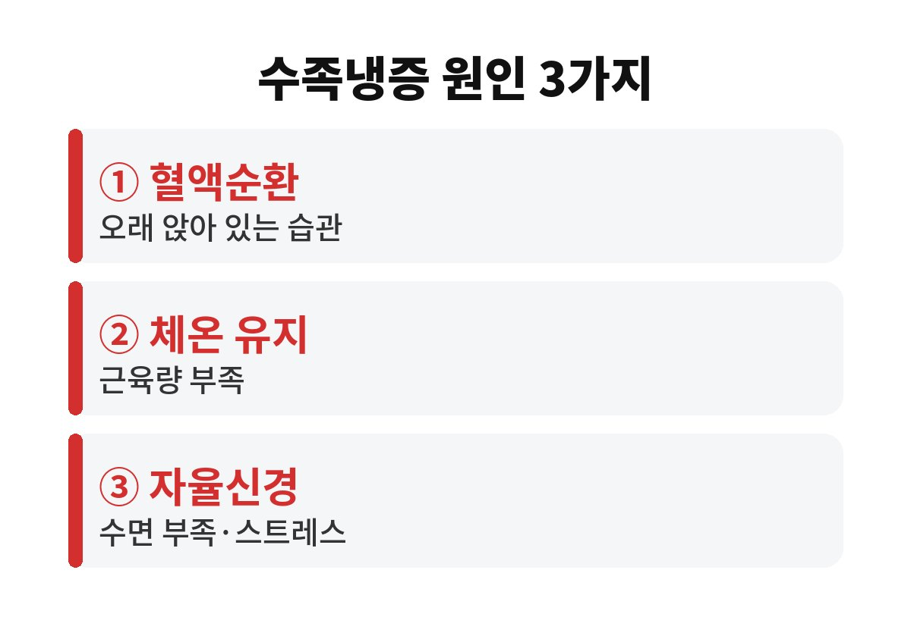
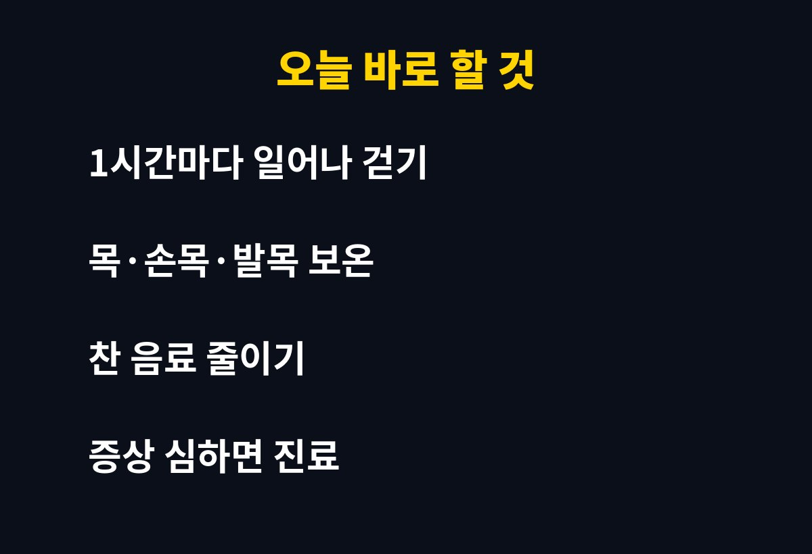

수족냉증 원인은 대부분 혈액순환, 근육량, 자율신경 이 세 가지에서 출발하고, 11월 들어 갑자기 손발이 시리다면 생활 습관부터 5분만 점검해 보셔도 단서를 꽤 찾을 수 있습니다. 하루 종일 앉아 일하는 직장인이라면 내 손발이 유독 차가운 진짜 이유가 뭘까 궁금하시죠?
기온이 뚝 떨어지면 우리 몸은 체온을 지키려고 몸 중심부로 피를 먼저 보냅니다. 그러면 손끝과 발끝은 상대적으로 피가 덜 가서 차가워지죠. 누구에게나 있는 반응이지만, 이게 유난히 심하고 오래간다면 수족냉증을 의심해 볼 수 있어요.

첫 번째는 혈액순환이에요. 오래 앉아 있으면 다리 쪽 혈류가 느려지고, 책상 위에서 손목만 쓰는 자세도 손끝 순환에 도움이 안 됩니다. 두 번째는 근육량입니다. 근육은 열을 만드는 난로 역할을 하거든요. 근육이 적으면 같은 추위에도 몸이 더 쉽게 식습니다.
세 번째는 자율신경이에요. 잠이 부족하거나 스트레스가 쌓이면 혈관이 필요 이상으로 조여질 수 있어요. 그래서 마감 주간에 유독 손발이 차갑다는 분이 많죠. 이 밖에 빈혈이나 갑상선 같은 질환이 숨어 있는 경우도 있어서, 단순한 추위 탓으로만 넘기지 않는 게 좋습니다.
손발이 시리면 양말부터 겹겹이 신게 되죠. 그런데 발에 땀이 차면 그 땀이 식으면서 오히려 더 차가워질 수 있어요. 꽉 끼는 양말이나 신발도 혈액순환을 막아 역효과가 납니다.
두껍게 신기보다는 헐렁하고 통풍되는 면 양말 한 겹에 발목 보온을 더하는 쪽이 낫습니다. 손도 마찬가지로 장갑은 얇고 따뜻한 것을 쓰고, 손목을 같이 감싸 주세요. 손목, 발목, 목처럼 혈관이 가까운 부위를 따뜻하게 하는 게 효율이 좋습니다.
아래 요점만 기억해 두세요.
① 한 시간에 한 번은 일어나서 걷기
② 목·손목·발목 먼저 보온하기
③ 찬 음료는 줄이고 따뜻한 물 자주 마시기
가벼운 스트레칭이나 걷기로 근육을 쓰면 몸에서 열이 나서 손발까지 따뜻해지기 쉬워요. 자기 전에 미지근한 물로 족욕을 하는 것도 도움이 될 수 있고요. 다만 너무 뜨거운 물은 피부를 자극하니 피하세요.

몸을 데우는 데는 먹는 것도 큽니다. 아침을 거르면 하루 시작부터 몸이 열을 덜 만들어서 손발이 더 쉽게 차가워져요. 따뜻한 국물이나 단백질이 들어간 식사를 챙기면 체온 유지에 보탬이 됩니다. 반대로 얼음이 가득한 음료를 습관처럼 마시면 속부터 식어서 손발이 더 시릴 수 있어요.
수면도 빼놓을 수 없습니다. 잠이 모자라면 자율신경이 예민해져서 혈관이 쉽게 수축하거든요. 자기 전 스마트폰을 오래 보면 잠들기 어려워지니, 잠들기 한 시간 전에는 화면을 줄이고 방을 너무 덥지 않게 맞춰 보세요. 수족냉증 원인을 하나씩 지워 가다 보면 의외로 사소한 습관 하나가 범인인 경우도 많습니다. 일주일만 기록해 보시면 내 패턴이 훨씬 또렷하게 보일 거예요.
손발이 시린 직장인이라면 아래 순서로 생활을 점검해 본다. 몰랐다간 겨울 내내 후회하기 쉽다.
손발 색이 하얗거나 파랗게 변하고 통증이 따라오는 경우, 한쪽만 유독 차가운 경우, 피로감과 체중 변화가 함께 있는 경우에는 생활 습관만으로 해결하려 하지 마시고 진료를 받아 보세요. 원인을 알면 대처도 훨씬 쉬워집니다.
오늘 하루 중 손발이 가장 차가워지는 시간이 언제인지 한번 떠올려 보세요. 앉아 있는 시간이 길었는지, 잠이 부족했는지 생각해 보면 내 수족냉증 원인이 보일 거예요. 도움이 되셨다면 구독과 공감 부탁드려요.
※ 일반적인 건강 정보이며 개인 증상은 반드시 전문의와 상담하세요.